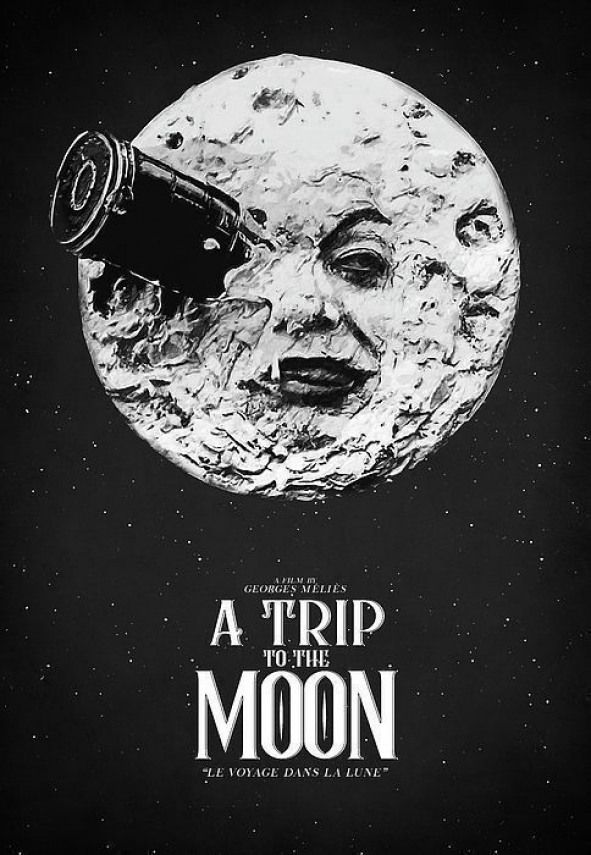

Films are similar to novels or short stories in that they tell a story. They include the same genres: romantic, historical, detective, thriller, adventure, horror, and science fiction. However, films may also include sub-groups such as: action, comedy, tragedy, westerns and war. The methods you use to analyze a film are closely related to those used to analyze literature; nevertheless, films are multimedial. They are visual media made for viewers. Films take command of more of our senses to create special atmospheres, feelings or to bring out emotions.
Along with the literary elements such as plot, setting, characterization, structure, and theme, which make up the text or screenplay, there are many different film techniques used to tell the story or narrative. Attention is paid to sound, music, lighting, camera angles, and editing. What is important is to focus on how all the elements are used together in making a good film.
A Trip to the Moon (French: Le Voyage dans la Lune)[a] is a 1902 French adventure short film directed by Georges Méliès. Inspired by a wide variety of sources, including Jules Verne's 1865 novel From the Earth to the Moon and its 1870 sequel Around the Moon, the film follows a group of astronomers who travel to the Moon in a cannon-propelled capsule, explore the Moon's surface, escape from an underground group of Selenites (lunar inhabitants), and return to Earth with a captive Selenite. Its ensemble cast of French theatrical performers is led by Méliès himself as main character Professor Barbenfouillis. The film features the overtly theatrical style for which Méliès became famous.